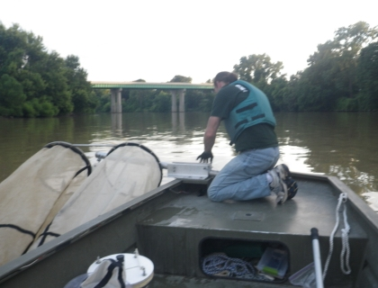

Investigating the Status of Grass Carp in the Sandusky River

In October 2012 a commercial fisherman in Ohio caught several small grass carp. These fish were all approximately the same length, which led researchers to think they might have been naturally reproduced. An examination of otoliths, small bones in fish heads that help them maintain equilibrium, revealed high levels of the naturally-occurring chemical strontium. This chemical has a particularly high concentration in the Sandusky and Maumee, rivers, leading researchers to believe the small grass carp were probably born there. This provided the first indirect evidence of grass carp reproduction in the Great Lakes, but direct evidence is still lacking. This project is designed to “catch them in the act” of spawning.
Researchers at the USGS Lake Erie Biological Station will be using three different gears to try to capture eggs and larvae of grass carp. Bongo nets, so named because when held up they resemble Bongo drums, are fine-mesh, cone-shaped nets that are towed through the water for 5-10 minutes. These nets capture floating eggs (grass carp eggs float) and any small fish that can’t swim fast enough to get out of the way. Light traps are fished at night and capture fish that are attracted to light – like grass carp. Light traps are fished for about 1 hour at a time in backwater areas where small fish seek cover from current and predators and abundant food. Dipnets are small, fine-mesh nets that a researcher can use to sample areas that can’t be sampled as easily with Bongo nets or light traps. Each of these gears will be used at least once a week June through September. These gears will also be used for three consecutive days during one or more high-flow events. Grass carp prefer to spawn when water flow is high, because high flows provide the best conditions for eggs to remain suspended to complete development.
There are at least two direct benefits of this research. First, if we capture eggs or larvae of Grass Carp we will demonstrate absolutely that Grass Carp are reproducing successfully in the Sandusky River. Second, using methods to estimate the age, in days, of larvae and the developmental stage of eggs we can determine when, within approximately an hour, and where, within a few hundred meters, Grass Carp spawned. With this information, and knowledge of river conditions when spawning occurred, we can begin to devise methods to prevent or disrupt spawning.
- As of June 2014 we have identified sampling locations and have tested gear on the Sandusky River.
- The first high-flow event was in early June, and researchers were able to sample three consecutive days during that event.
This project began in June 2014 and no products are available. We anticipate several reports, presentations, and peer-reviewed articles from this work that will inform future management decisions and actions.
Patrick M. Kocovsky, pkocovsky@usgs.gov
Lake Erie Biological Station, USGS
419-625-1976
Jeremy Pritt, jpritt@usgs.gov
Lake Erie Biological Station, USGS
419-625-1976